De martes a viernes a mediodía (salvo festivos). Cuatro primeros y cuatro segundos, postre, vino y café.

Jatetxea · Hondarribia
Un viejo molino del Bidasoa, parrilla y txakoli de casa
Hoy hay menú del día · 35 €
Más de 40 años tras los fogones. Pescado fresco, marisco y txuleta a la parrilla, entre viñedos y un jardín de begonias.
4,4★★★★☆903 opiniones en Google
Reservar mesa
Cuéntanos
¿A qué venís?
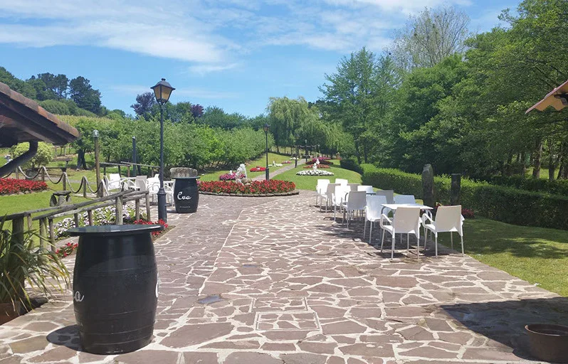

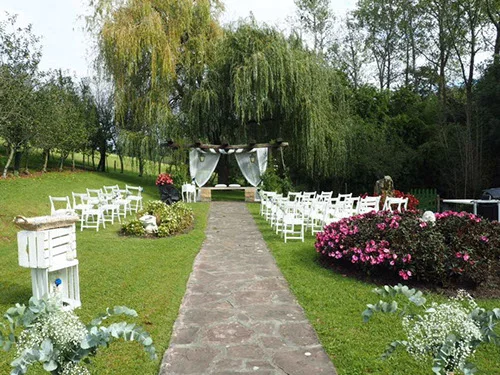
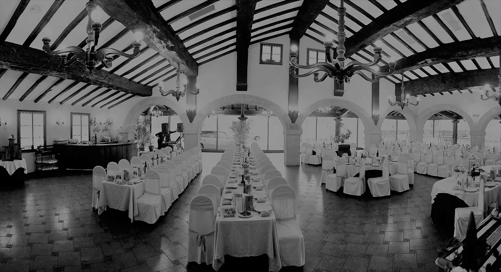
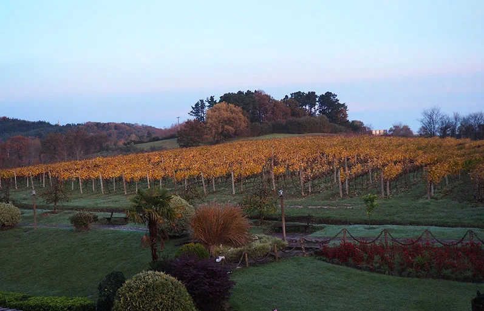
Menú del día
Martes a viernes, a mediodía
Reservar mesa
Menú del día, 35 €
Cuatro primeros y cuatro segundos que cambian cada semana con la temporada. Postre, vino y café, IVA incluido.
Carta y menús
Lo que nos identifica
Una carta de temporada que cambia con el producto. Apostamos por el pescado fresco y la carne de calidad, y la parrilla manda.
La carta completa cambia con la temporada: pregúntanos al reservar.
Desde los años 80
Un molino con jardín
A comienzos de los años 80 la familia reformó un viejo molino del barrio Jaizubia, y desde entonces no ha parado de renovarlo. Hoy es un referente para las celebraciones de la comarca del Bidasoa.
Alrededor, el jardín, el estanque, los viñedos y los olivos de los que salen nuestro txakoli, nuestra sidra y nuestro aceite.
40+años tras los fogones
5comedores
750comensales a la vez

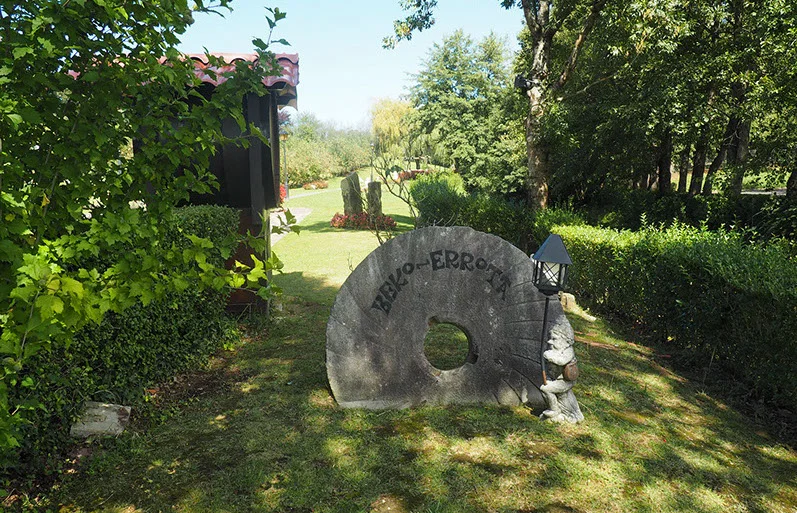
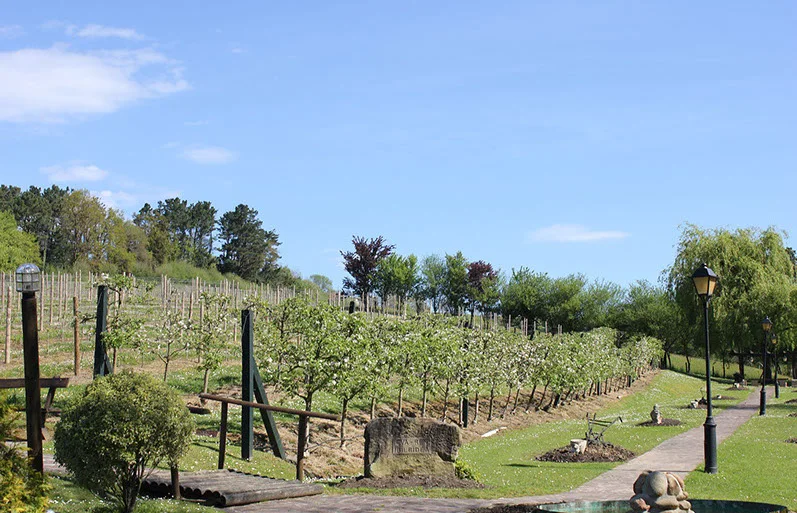
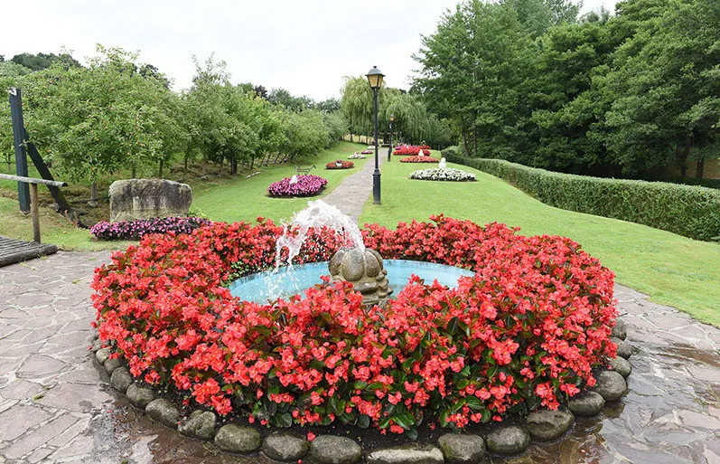
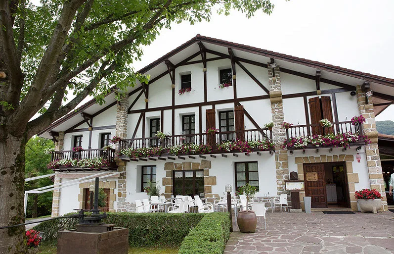

De nuestra tierra a la mesa
Hecho en casa
Cultivamos nuestros propios productos con mimo, en nuestras tierras.
Eva Mahastia
De nuestra uva Hondarribi zuri: un txakoli muy selecto, de viñedo familiar, afrutado y aromático.
Sidra Beko Errota
Equilibrada y suave: natural, de nuestras variedades de manzana. El secreto está en la mezcla.
Aceite Beko Errota
El virgen extra del norte: de unos quinientos olivos, con la oliva recogida de forma artesanal.
Bodas y eventos
Vuestro día, a medida
No hay dos bodas iguales. Tenemos muchos menús y posibilidades para que el día sea como lo habéis imaginado, y que solo os preocupéis de disfrutarlo.
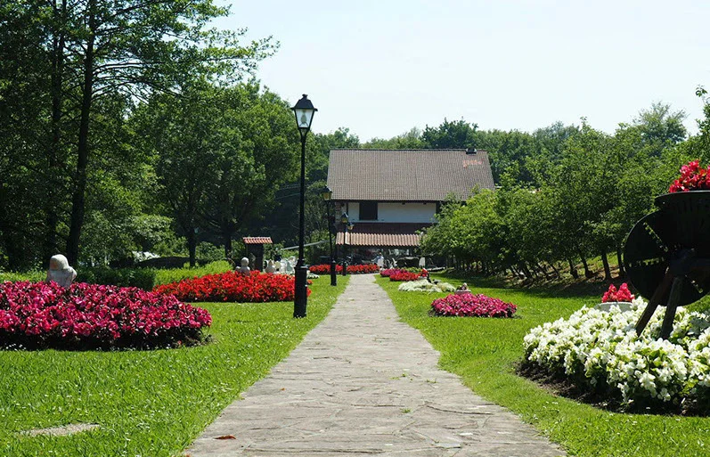
Bienvenida
Lunch en el jardín
Los primeros bocados al aire libre, en un espacio amplio y tranquilo, con vuestros invitados.
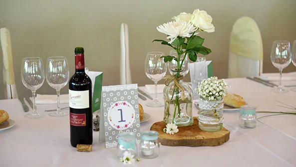
Banquete
Menús personalizables
Cinco comedores de distintos tamaños, que se combinan según lo que necesitéis: de una boda íntima a un congreso.

Y después
Recena de pintxos
Si queréis quedaros hasta tarde: pintxos para quien quiera comer algo, y fiesta para el resto.
Reservar mesa
Elegid el día, nosotros ponemos la mesa
Dejadnos la solicitud y os llamamos para confirmarla. Si es para hoy mismo, mejor por teléfono.
943 64 31 94Solicitud enviada
Esto es una muestra: no se ha enviado nada. En la web de verdad, cada solicitud os llega al momento al correo.
Opiniones
903 personas ya lo cuentan
★★★★☆903 opiniones en GoogleLeerlas en Google
Contacto
Cómo llegar
943 64 31 94En el barrio Jaizubia de Hondarribia, entre viñedos. Para una comida, un grupo o para empezar a preparar vuestra boda, llámanos o escríbenos.
- Teléfono
- 943 64 31 94
- Menú del día
- De martes a viernes, a mediodía (salvo festivos)
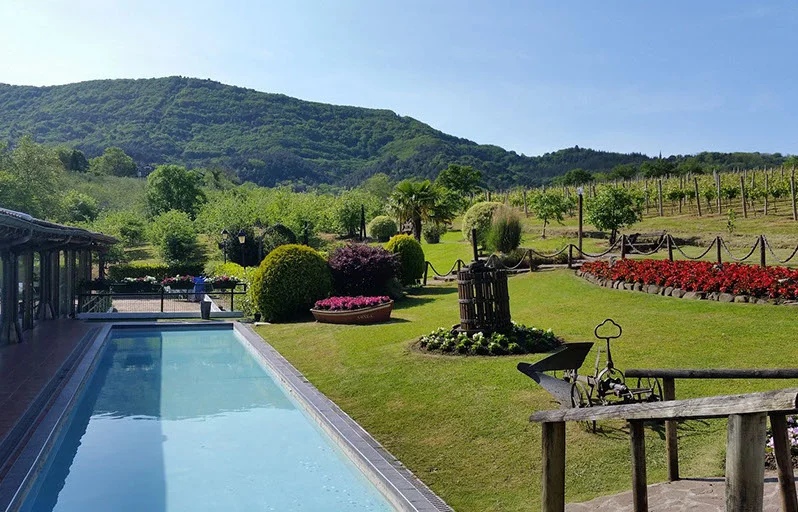